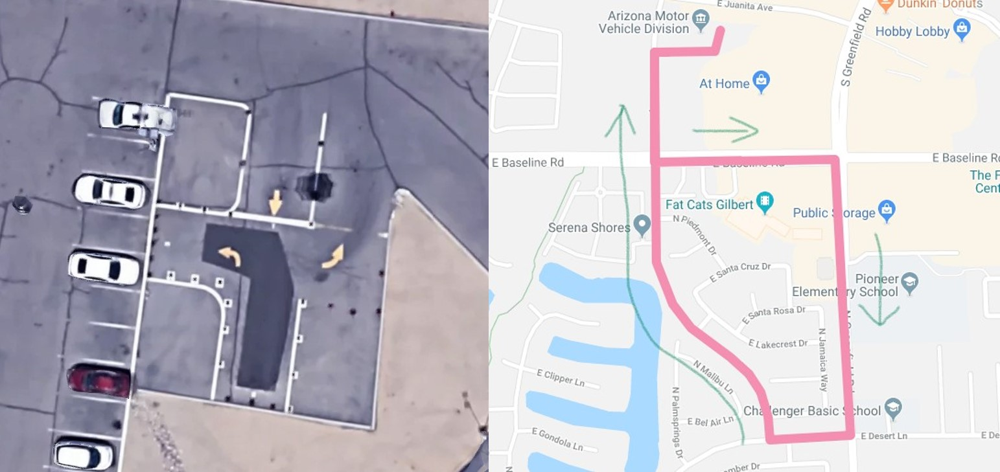

美国驾照考试和国内一样分为笔试和路考。
准备笔试
在AZ笔试有30道题，答对24道即算通过。可以到MVD官网找例题刷一刷，我考之前过了一遍Drvier License Manual, 刷了官网的三道题，还下了刷题软件刷了100道题，考试的时候发现还是官网的题目靠谱，基本都是原题。推荐直接刷MVD官网的原题，如果有时间还是把Driver License Manual过一遍，毕竟这样会了解更全面一点，开车的时候头脑会更加清楚。
笔试
考permit（似乎也可以直接申请standard driver license，可以省7刀permit的钱）我是到Tempe的MVD进行考试，进去先拍照，然后排队注册填表。这一步可以提前在网上预填信息，然后把条形码打印出来，这样可以省一些在那填表的时间。交完费之后检测视力。然后就可以到test area上机考试了。考试easy，小心一点慢一点也只需5-10分钟。
考完出来，会有工作人员给你确认，然后给你临时permit单子，正式的会在一周以后寄到住址。之后就在门口的机器上预约路考，也可以网上预约。我是约在Mesa的考点，因为听说Mesa会简单一些，Tempe的路考考侧方停车，而Mesa的考倒车入库。
路考
改日中午11点在朋友（有车大佬）的陪同下，开车出发去位于Mesa的MVD （4123 E Valley Auto Dr, Mesa, AZ 85206）。由于离考点还有一定空余时间，我们到了之后没有先去MVD里面报道，而是顺着停车场到了考倒车入库的地方。我们发现前面刚好有一辆红色的车考完倒车入库，去进行road test，于是趁机尾行其后，提前跑一跑考试路线。前面红车驾驶员在考的时候有很多失误（左转弯绿灯不走、到十字路口强行换道），这都被我们尽收眼底，也作为反面案例记在心里。等我们转完一圈回到MVD，遇到红车驾驶员正愁容满面和考官在确认信息。原来驾驶员是一印度老哥，看来结果并不乐观呀。我后面又跑了两圈之后回到MVD注册，拍照并交了10刀之后，等着考官来领取考试表。监考我的是一位和蔼的女考官，刚上来就问我之前在国内有没有开过车，我说很少。后来才知道跟我一起来考的室友回答她开了5年，于是他的road test直接免考了。。。（违规的！考官后面嘱咐他不要告诉别人，哈哈）
在我进行完倒车入库后，考官就上我的车进行路考了。考官在我开出停车场之前就嘱咐我不要开太慢，免得扣分，并且路上给我指示，告诉我一些开车技巧，给我感觉是都不是在考试。

Tips（不保证路线完全一样）:
- 第一个左转弯后，进入三车道的最左侧。由于下一个路口会右转弯，做好两次往右变道的准备。变道时车速不要慢的太多，免得后车撞上，看右后方无车后把握时机变道。记得打右转向灯；
- 右转向后有一个学校，限速35mph，开到35mph，别太慢；
- 最后回来有一个路口要直行，注意车道，别像印度老哥一样走到左转车道上面去了。
整个路不超过10分钟。回到出发点，考官就告诉我通过了，后面就可以去室内排队（Completed Tests）要驾照啦。工作人员会当场发一个临时的驾照（一页纸），正式的会邮寄到住址。